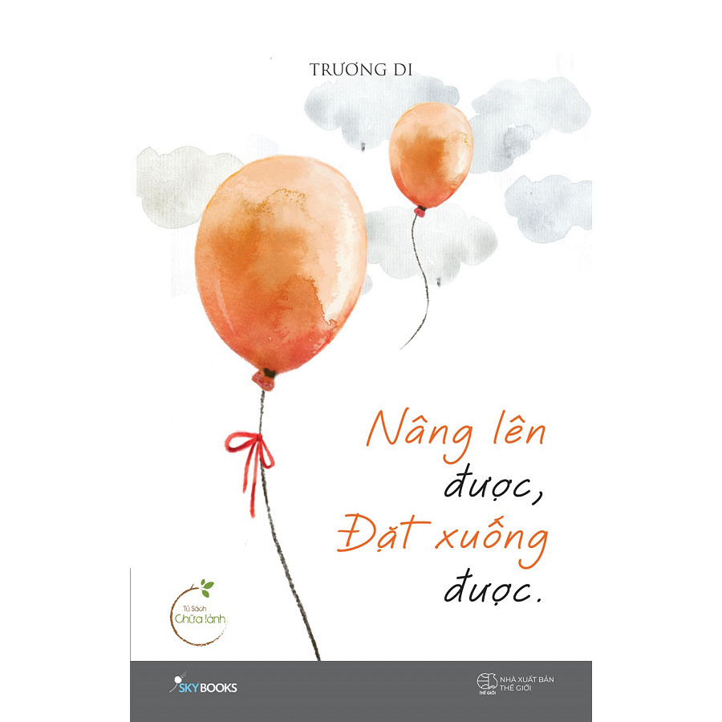

| 1 |
Tôi Thấy Hoa Vàng Trên Cỏ Xanh |
Cuốn sách viết về tuổi thơ nghèo khó ở một làng quê, bên cạnh đề tài tình yêu quen thuộc, lần đầu tiên Nguyễn Nhật Ánh đưa vào tác phẩm của mình những nhân vật phản diện và đặt ra vấn đề đạo đức như sự vô tâm, cái ác. 81 chương ngắn là 81 câu chuyện nhỏ của những đứa trẻ xảy ra ở một ngôi làng: chuyện về con cóc Cậu trời, chuyện ma, chuyện công chúa và hoàng tử, bên cạnh chuyện đói ăn, cháy nhà, lụt lội,... “Tôi thấy hoa vàng trên cỏ xanh” hứa hẹn đem đến những điều thú vị với cả bạn đọc nhỏ tuổi và người lớn bằng giọng văn trong sáng, hồn nhiên, giản dị của trẻ con cùng nhiều tình tiết thú vị, bất ngờ và cảm động trong suốt hơn 300 trang sách. Cuốn sách, vì thế có sức ám ảnh, thu hút, hấp dẫn không thể bỏ qua. |
Nguyễn Nhật Ánh |
CI1 |

|

|
| 2 |
Thanh Xuân Không Hối Tiếc |
Mỗi người có một cách khác nhau để sống những ngày tuổi trẻ, có người dành trọn nó cho những cuộc tình, có người dành trọn nó cho công việc, có người dành trọn nó để tự yêu thương mình, và cũng có những người chia tuổi trẻ của mình ra, để yêu một vài người, sau đó yêu mình, yêu người xung quanh mình, rồi đến một lúc nào đó thích hợp mới tiếp tục muốn yêu thêm một người cho đến hết cuộc đời.
Cái người ta hoài công tìm kiếm suốt một thời xanh trẻ, rốt cuộc không phải là một tình yêu điên cuồng mù quáng, lại càng không phải là những thứ vật chất phù du. Cuối cùng khi đi hết đoạn đường đầy tin yêu và khát vọng, người ta chỉ mong thấy được sự thanh thản bình yên trong sâu thẳm lòng mình.
Chúc bạn có một thanh xuân không hối tiếc! |
Du Phong |
CI2 |
|
|
| 3 |
Bùng Nổ Bitcoin - Công Nghệ Blockchain, Fintech 4.0 hay Bong Bóng? |
Tại sao Bitcoin lại ra đời?
Bitcoin là gì?
Bitcoin có phải là bong bóng không?
ICO là gì?
Tại sao Bitcoin lại có giá trị cao?
Tại sao cơ chế công nghệ Blockchain lại là phát minh thay đổi nhân loại?
Có thể ứng dụng gì vào cuộc cách mạng công nghệ Fintech 4.0?
Tất cả sẽ được giải đáp trong quyển sách Bùng Nổ Bitcoin - Tiền Tệ Thay Thế Sẽ Thay Đổi Thế Giới Như Thế Nào mà SG Trading sắp giới thiệu đến các bạn. Bùng Nổ Bitcoin tiếp cận Bitcoin từ góc độ phức tạp hơn thay vì chỉ tập trung vào giao dịch. Tác giả Brian Kelly, một chuyên gia đầu tư tài chính - tiền tệ với hơn 20 năm kinh nghiệm đã thực hiện một nghiên cứu chuyên sâu vào trong cuộc cách mạng Bitcoin và khám phá ra tiềm năng thay đổi toàn bộ xã hội của công nghệ này. |
Nhà Xuất Bản Kinh Tế TPHCM |
CI3 |
|
|
| 4 |
Nâng Lên Được, Đặt Xuống Được |
“Nâng lên được, đặt xuống được” không chỉ là thông diệp, là cách sống, tác giả còn viết chạm và sâu về hành trình của những người được xem là Cô độc. Hướng nội đôi khi khiến chúng ta thành công hạnh phúc chậm hơn. Nhưng chắc chắn sẽ bền lâu hơn. Nỗi sợ sinh ra để ngáng chân ta, khuyết điểm sinh ra để được lấp đầy, nội tâm sinh ra để được thấu hiểu. Và chúng ta được sinh ra xứng đáng để hạnh phúc dù theo cách này hay cách khác. Hành trình học cách nâng đặt, học cách buông bỏ, vượt lên những mất mát tổn thương để thấy lòng mình vơi nhẹ, để đủ bản lĩnh, đủ mạnh mẽ đối diện với giông gió cuộc đời là hành trình không dễ dàng.
“Nâng lên được, đặt xuống được” dành cho bạn sự thấu hiểu để bạn tin rằng: Tâm an thì đời an. Tâm sóng gió thì đời đảo điên.
Vậy nên an nhiên hay không? Hạnh phúc hay không chính là phụ thuộc ở việc bạn có dám buông bỏ, có can đảm sống cho những điều nhỏ bé bên trong mình hay không?
|
Trương Di |
CI4 |

|
|
{kind=link}
{kind=link}
{kind=link}